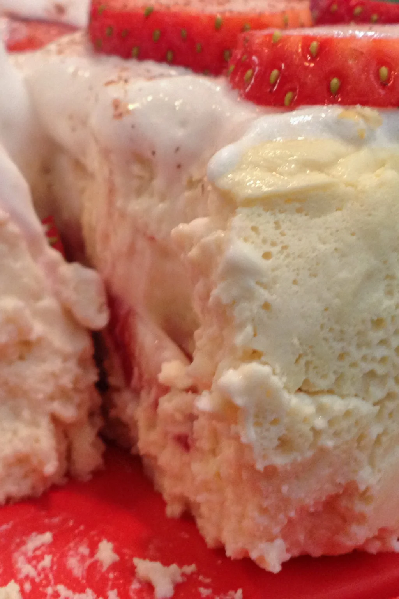

Home
Protein Cheesecake

This recipe makes for a nice treat at the end of a week of consistent workouts!
Ingredients
- 12 Ounces Cream Cheese - Fat Free 339g
- 12 Ounces Greek Yogurt - Plain Fat Free
- 2 Large Whole Eggs
- ¾ Cup Sweetener
- ¼ Teaspoon Salt
- 2 Scoops Protein Powder - 60g (I like vanilla)
- 10-15 Drops Liquid Sweetener - *Optional
- 1 Teaspoon Vanilla Extract
Directions
- Mix all of your ingredients together in a bowl
- Take out and coat a 6’’ pan with non-stick cooking spray or place parchment paper inside it
- Bake it on 325F/162C for 30-35 minutes
- Turn your oven down to 200F/93C for another 50-60 minutes
- Let it cool, wrap it up, and put it in the fridge for a few hours
Good enough to push through those tough workouts!